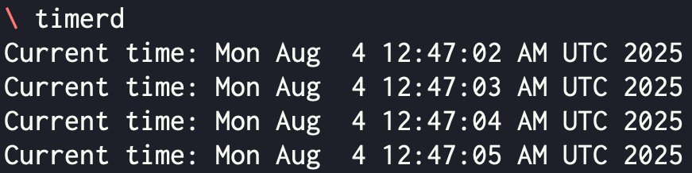
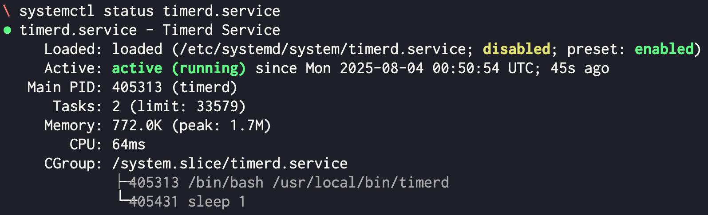
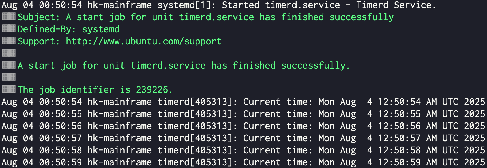
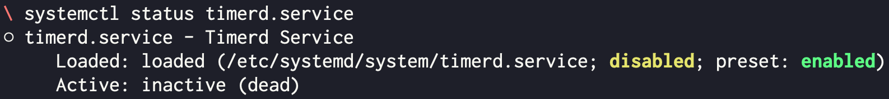

Systemd Unit
- Unit 은 Systemd 에서 관리하는 background process 를 말한다.
- 즉, 어떤 일을 background 로 daemon 화 하여 계속 돌리고 싶을 때 이 기능을 사용하면 된다 이마리야.
- 가장 대표적인 예시가 SSH 이다. SSH 는 client-server model 로 작동하는데, 많은 사람들이 간단하게 22번 port 로 서버에 SSH 로 접속할 수 있는 것은 이 서버에서 SSH process 가 systemd 에 의해 background 로 돌고 있기 때문이다.
- 그럼 내가 원하는 작업을 간단하게 Systemd Unit 으로 등록하는 방법에 대해 예시로 알아보자.
예시 Script
- 아래의 script 는 1초마다 현재 시간을 출력하는 간단한 shell script 이다.
- 이놈을
timerd라는 파일 이름으로 저장하자.
timerd
#!/bin/bash
while true; do
echo "Current time: $(date)"
sleep 1
done- 그리고 이놈에게 실행권한을 준다.
chmod +x timerd- 그리고 이놈을
$PATH에 포함된 디렉토리 중 하나인/usr/local/bin/로 옮겨주자.
sudo mv timerd /usr/local/bin/- 한번 실행해보면 다음과 같이 작동하는 것을 알 수 있다.
timerd
Unit 파일 작성
- 이 실행파일을 Systemd unit 으로 만들기 위해서는 Unit 파일을 작성해야 한다.
- 다음과 같이 적어준 다음
timerd.service로 저장해준다.
timerd.service
[Unit]
Description=Timerd Service
[Service]
Type=simple
ExecStart=/usr/local/bin/timerd
Restart=always
[Install]
WantedBy=multi-user.target- 그리고 이 파일을
/etc/systemd/system으로 옮겨준다.
sudo mv timerd.service /etc/systemd/system/Unit 실행
- Systemd 에 대한 control 명령어인
systemctl을 사용해서 이 unit 을 관리할 수 있다. - 다음의
start명령어로 unit 을 실행할 수 있다.
sudo systemctl start timerd.service- 만약 부팅시에 자동으로 실행되게 하고 싶으면,
enable명령어를 사용하면 된다.- 이 명령어는 unit 을 실행시키지는 않는다. 그래서 부팅시에 자동으로 실행되게 등록하는 것과 지금 당장 실행하는 것을 모두 하고싶으면
--now옵션을 사용하면 된다.
- 이 명령어는 unit 을 실행시키지는 않는다. 그래서 부팅시에 자동으로 실행되게 등록하는 것과 지금 당장 실행하는 것을 모두 하고싶으면
sudo systemctl enable --now timerd.service- 그리고
status로 현재 상태를 볼 수 있다.active (running)상태면 작동중인거다.
sudo systemctl status timerd.service
- 이놈이 표준출력으로 내보낸 메세지는 자동으로 로깅된다. 이 로그를 확인하고 싶으면 systemd 의 로깅 서비스인 journald 를 사용하면 된다.
sudo journalctl -xeu timerd.service
- 이놈을 멈추고 싶으면
stop을 사용하면 된다.
sudo systemctl stop timerd.service- 이때의
status는 다음과 같이 출력된다.
